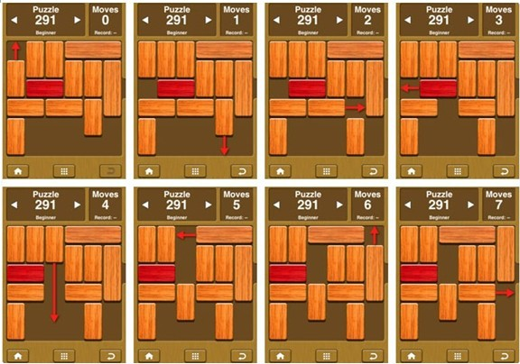
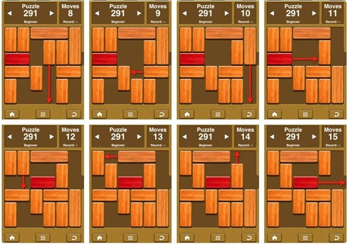

HDU3900. Unblock Me
内存限制：2000/1000 MS (Java/Others) 时间限制：125536/65536 K (Java/Others)
题目描述
Unblock Me is a simple and addictive puzzle game on iPhone/iPod Touch. The goal is to get the red block out of the board by sliding the other blocks out of the way.

You can only move the block if it has a free space to move. In one step, you can move only one block, and you can move multiple units. To clear the puzzle, you have to move the red block out of the board. The red block can only move in horizontal direction. The vertical blocks can move in vertical direction only. The horizontal blocks can move in horizontal direction only.
Now try to crack it. The board is 6*6. There are two kinds of vertical blocks (1*2, 1*3), and two kinds of horizontal blocks (2*1, 3*1). The exit is always at the right of the grid (5, 2).

You can only move the block if it has a free space to move. In one step, you can move only one block, and you can move multiple units. To clear the puzzle, you have to move the red block out of the board. The red block can only move in horizontal direction. The vertical blocks can move in vertical direction only. The horizontal blocks can move in horizontal direction only.
Now try to crack it. The board is 6*6. There are two kinds of vertical blocks (1*2, 1*3), and two kinds of horizontal blocks (2*1, 3*1). The exit is always at the right of the grid (5, 2).
输入格式
There are several cases in the input data.
For each case:
The first line contains a number N which indicates how many blocks are on the board, then N lines follows. Each line contains five numbers. The first number is the index of this block, which increase from 0 to N-1. The next two numbers is the coordinate of the left upper corner. The last two numbers is the coordinate of the right down corner.
The last line contains one number which is the red block’s index.
For each case:
The first line contains a number N which indicates how many blocks are on the board, then N lines follows. Each line contains five numbers. The first number is the index of this block, which increase from 0 to N-1. The next two numbers is the coordinate of the left upper corner. The last two numbers is the coordinate of the right down corner.
The last line contains one number which is the red block’s index.
输出格式
For each case, output an integer in one line, which indicates the minimal steps to crack it.
A solution always exists.
A solution always exists.
样例
样例输入
12
0 0 1 0 2
1 1 0 1 1
2 2 0 2 1
3 3 0 5 0
4 1 2 2 2
5 3 1 3 2
6 4 1 4 2
7 5 1 5 3
8 0 3 1 3
9 2 3 3 3
10 4 3 4 4
11 0 4 0 5
4样例输出
16
HintSee the image below to get more details.

